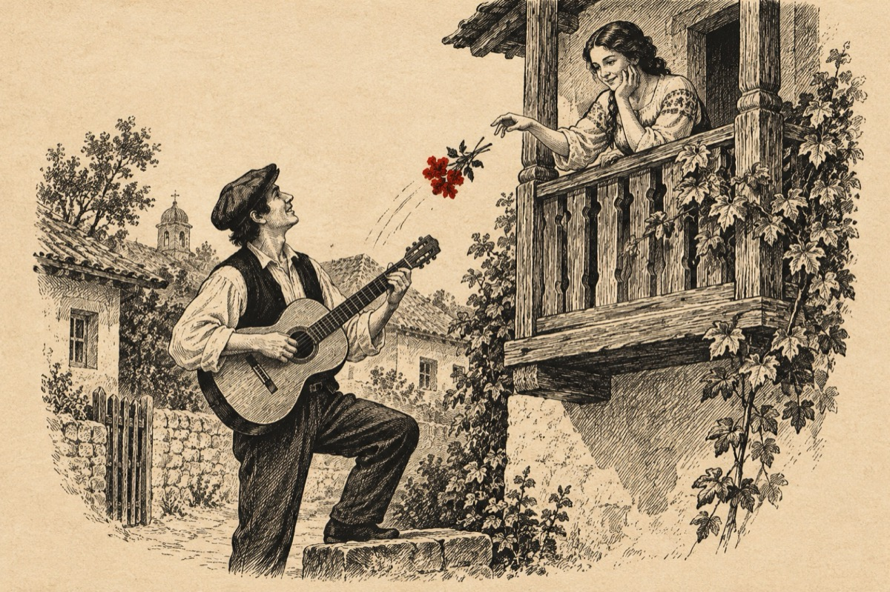

Sunt trubadur
Nu-s cavaler medieval
Nici nobil eu nu sunt
Nu am nici sabie nici cal
Dar sunt un trubadur ne-nfrânt
Îmi iau ghitara și mă lupt
În cânt de serenadă
Și inima la fete le-o străpung
Pe la balcoane, pe alei, pe stradă.
Sunt trubadur, sunt trubadur
Mereu sunt pus pe șagă
Și cânt și plâng, de toate-ndur
Când fata mi-este dragâ.
Cand la balcon e-o Cosânzeană
Arunc spre ea cu mii de flori
Dau vocii strune de ghitara
Și fata-i prinsa de fiori.
Alerg și strig de bucurie
Când fata mă iubește
Și totu-n jur e-o veselie
Și universul îmi zâmbește
Sunt trubadur, sunt trubadur
Mereu sunt pus pe șagă
Și cânt și plâng, de toate-ndur
Când fata mi-este dragâ.
Vasile Groza
Apare și în: Poezii cu animale.